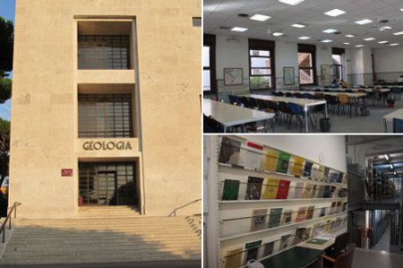

Biblioteca di Geologia
La biblioteca è situata all’interno della Città Universitaria e precisamente al piano terra del Dipartimento di Scienze della Terra
ed è accessibile dall’ingresso lato di Geologia.
Servizi:
L’accesso alla biblioteca è pubblico. Per usufruire dei servizi è necessario iscriversi compilando un modulo con l’indicazione dei propri dati personali (che verranno trattati conformemente alla legislazione vigente sulla privacy) e consegnando una fotocopia di un documento di identità valido.
Al momento dell’iscrizione verrà fornito all’utente un codice che gli permetterà l’accesso ai servizi di tutte le biblioteche della Sapienza.
CONSULTAZIONE PC:
Sono a disposizione dell'utenza 4 computer, utilizzabili in modalità wireless, per la consultazione dei cataloghi in linea, delle banche dati e dei periodici on-line, e per ricerche attraverso le varie risorse elettroniche dell’Ateneo. Tutti i locali della biblioteca sono comunque coperti dalla rete wireless di Ateneo che consente l’accesso al web mediante autenticazione attraverso la password di Infostud.
CONSULTAZIONE MATERIALE LIBRARIO E CARTOGRAFICO:
Tutto il materiale librario e cartografico conservato dalla biblioteca è consultabile negli orari di apertura dei servizi previa consegna di un documento di identità. Detto materiale deve essere trattato con la massima cura e riconsegnato almeno 15 minuti prima della chiusura dei servizi. Per la consultazione del materiale antico è necessario prendere preliminarmente contatti con il personale della biblioteca.
PRESTITO:
Per accedere a questi servizi è necessario essere iscritti alla biblioteca.
PRESTITO LOCALE:
Di norma possono essere prestati al massimo due volumi per la durata di 15 giorni rinnovabili una sola volta (qualora il documento non sia stato già prenotato da altri). Il prestito locale è personale, l’utente è responsabile dei documenti ricevuti e della loro integrità e non può prestare ad altri le opere ricevute in prestito. L’utente è tenuto a rispettare la data di scadenza del prestito altrimenti, dopo opportuni solleciti, sarà sospeso dal servizio presso tutte le biblioteche del Polo La Sapienza, inizialmente per 30 giorni e, trascorso questo termine, a tempo indeterminato (art. 58 del D.P.R. 417/1995). In caso di smarrimento, o di grave deterioramento, di un documento della biblioteca, l’utente è tenuto a sostituirlo con una nuova copia, se ancora in commercio, o con un documento di pari valore, se esaurito.
Orario della Biblioteca:
Dal giorno 27 aprile 2015 la sala lettura della biblioteca di Scienze della Terra è stata automatizzata per poterne usufruire in orario notturno e nelle giornate di sabato, domenica e festivi.
L’accesso - in tale fascia - sarà consentito ai soli studenti di Sapienza in regola con l’iscrizione per l’anno accademico in corso e muniti di apposita tessera di riconoscimento personale (badge). Per info sulle modalità di ritiro/richiesta card clicca qui.
Nella fascia serale-notturna (dalle 21.00 alle 8.00), il sabato e la domenica non saranno erogati servizi.
L'apertura con i servizi regolari avverrà invece con il seguente orario:
Lunedì-Venerdì : ore 8.30 – 19.00
Durante l'orario di apertura con i servizi, la sala lettura sarà ad accesso libero, secondo le modalità consuete.
Un terzo dei posti a sedere è riservato agli studenti iscritti ai corsi di studio afferenti al Dipartimento di Scienze della Terra.
Foto:

Fonte